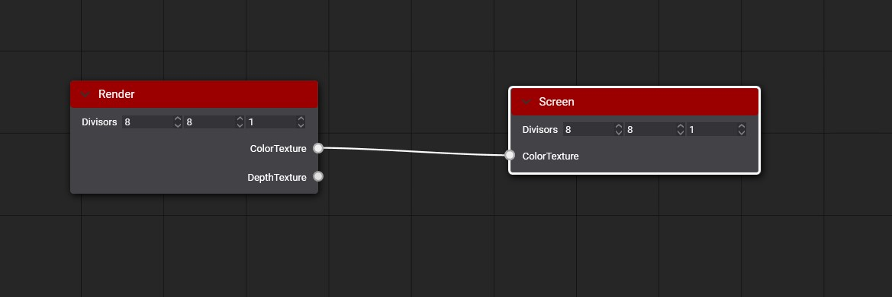
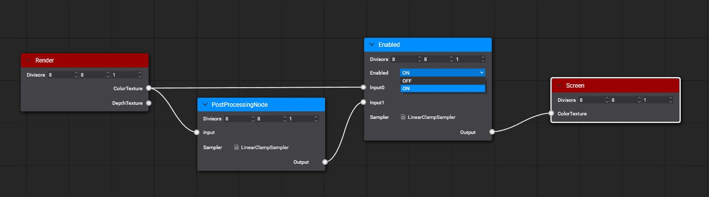

Custom Postprocessing graph
This section, it is explained how to create your custom postprocessing graph. This could be useful if you want to create and test effects that are not available in the default postprocessing graph.
Example
For this example, we are going to create a simple filter that renders only the red component of input render.
First, create a compute effect from the Assets Details panel:

Write the code of our custom filter from Effect Editor:
[Begin_ResourceLayout]
Texture2D input : register(t0);
RWTexture2D<float4> Output : register(u0);
SamplerState Sampler : register(s0);
[End_ResourceLayout]
[Begin_Pass:Default]
[Profile 11_0]
[Entrypoints CS = CS]
[numthreads(8, 8, 1)]
void CS(uint3 threadID : SV_DispatchThreadID)
{
float2 outputSize;
Output.GetDimensions(outputSize.x, outputSize.y);
float2 uv = (threadID.xy + 0.5) / outputSize;
float4 color = input.SampleLevel(Sampler, uv, 0);
Output[threadID.xy] = float4(color.x,0,0,1);
}
[End_Pass]
Create a new Postprocessing graph asset from Assets Details panel

After creating the postprocessing graph asset make double click on the asset to open the Postprocessing Graph Editor. You can see an empty postprocessing graph where the render node connects directly with the Screen node.

Drag our compute effect from the Available effects panel to the graph editor to create a new node. Then connect render node Color texture port with Custom node Input port and Custom node Output port with Screen node Color Texture port.

After saving the graph, you can see the result on the viewport panel.

To use your custom postprocessing graph in your scene read more details in using postprocessing graph section
Special Nodes
There is a special Node named Enable that you can use to enable or disable an effect in your graph. Enable node has two inputs where input0 port connects with path without applying the effect and input1 port that connect with the path with the effect apply. Using its Enabled parameter you can select which path will be used by the output port. Everyone analyzes the graph before using and discard the no-used paths. For example, we are going to add this special node out before example.

Special [Output] metatags
There are special compute effect metatags used by the Postprocessing graph. The metatags Output could be used to define the output texture of any node. By default, the output texture is created using the first input texture information but you can configure it with Output metatags. With these special metatags, you can define the with, height, and pixel format of the node output texture.
Output overloading
[Output(ReferencedInput)]
[Output(ReferencedInput, ScaleFactor)]
[Output(ReferencedInput, ScaleFactor, PixelFormat)]
[Output(width, height, PixelFormat)]
The metatag parameters are:
| Parameter | Description |
|---|---|
| ReferenceInput | Input name used to get width, height and Pixel format of the output texture. |
| ScaleFactor | Defines the scale factor apply to the width and height of the ReferenceInput to get the output width and height dimensions. |
| PixelFormat | Defines the pixel format of the output texture. |
| Width | Defines the width dimension of the output texture. |
| Height | Defines the height dimension of the output texture. |
Example
In the following example the Depth input texture has 1920x1080 dimension and D24_UNorm_S8_UInt pixel format.
Texture2D<float> Depth : register(t0);
RWTexture2D<float4> PositionOutput : register(u0); [Output(Depth, 1, R16G16B16A16_Float)]
RWTexture2D<float2> VelocityOutput : register(u1); [Output(Depth, 0.5, R16G16_Float)]
RWTexture2D<float> LinealDepthOutput : register(u2); [Output(500, 500, R32_Float)]
The result of the resolve the output tags will be:
| Output Texture | Dimensions | Pixel Format |
|---|---|---|
| PositionOutput | 1920x1080 | R16G16B16A16_Float |
| VelocityOutput | 960x540 | R16G16_Float |
| LinealDepthOutput | 500x500 | R32_Float |
Postprocessing Graph Decorator
You can create a c# class extending from PostProcessingGraphDecorator to define how your custom postprocessing graph is displayed on the PostProcessingGraphRenderer component. Only need to implement the GenerateUI method using the Editor extensions. More details about here.